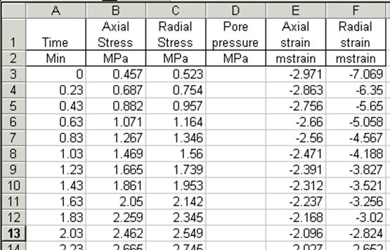

The experiment file format
Experiment files are Excel format files. The Material Library can read an Excel file containing multiple sheets. If more than one sheet is found in a file, the Select sheet dialog is shown where the sheets can be selected that should be loaded.
The following data is needed for each step, including the allowed units.
· Axial stress (Pa, kPa, MPa, psi, bar)
· Radial stress (Pa, kPa, MPa, psi, bar)
· Axial strain (-)
· Radial strain (-)
Besides it is possible to have
· Time (days, hours, minutes, seconds)
· Pore pressure (Pa, kPa, MPa, psi, bar)
The bold words are the keywords for the column headers (first row). The units should appear in the second row (unit cells for strains are ignored, but must be present)
If Time is not available it is assumed to be zero for all steps.
If Pore pressure is available, the Axial and Radial stresses are assumed to be total stresses. Effective stresses are then calculated using the given pore pressures. If Pore pressure is not available, the Axial and Radial stresses are assumed to be effective stresses.
Data should start in the first column and the first row. No empty rows or columns are allowed in the data. It is, however, allowed to have empty data columns for the time and pore pressure below the headers.
An example is shown below
